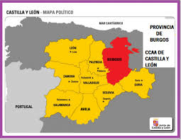
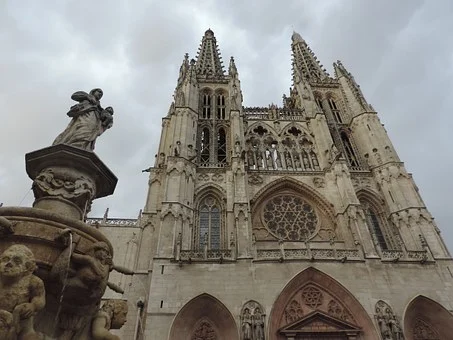

PROVINCIASAVILALEON PALENCIA SALAMANCA SEGOVIA SORIA VALLADOLID ZAMORA ENLACES EXTERNOS VOLVER AL INCIO |
BURGOSÍNDICE
1. LOCALIZACIÓNBurgos se encuentra al noreste de la comunidad 2. LOCALIDADES PRINCIPALESPrincipales ciudades:Burgos, Miranda de Ebro, Aranda de Duero, Briviesca, Medina de Pomar y Villarcayo de Merindad de Castilla la Vieja Ubicacion de Burgos capital 3. GEOGRAFÍA DE LA PROVINCIACoordenadas geograficas: Latitud: 42.3409, Longitud: -3.69973. 42° 20′ 27″ Norte, 3° 41′ 59″ Oeste Superficie: 10.708 hectáreas, 107,08 km² Altitud: 871m Clima: mediterraneo Tiempo actual de Burgos: 4. HISTORIALa ciudad de Burgos es fundada como tal por Diego Rodríguez conocido con el sobrenombre de "Porcelos", en el año 884. Alfonso III Rey de León intentando frenar el avance sarraceno, ordenó al Conde D.Diego que fundase un burgo murado a orillas del Arlanzón. La privilegiada situación del emplazamiento, en la encrucijada de las principales rutas y caminos de la época y en mitad del Camino de Santiago, hizo que Burgos creciera rápidamente. En el siglo X Burgos ya era una gran ciudad de Castilla (llegando incluso a ostentar la capitalidad) y pieza imprescindible en la reconquista. El siglo XVI supuso para Burgos el siglo de su plenitud. Hacia finales del siglo XV y comienzos del siglo XVI, la ciudad que había nacido sobre un medio agrícola, vuelve las espaldas al campo y se dedica a funciones polarizadas en torno al comercio. Es durante el siglo XVI cuando Burgos explota al máximo las ventajas de su situación geográfica.A finales del siglo XVI, asistimos al inicio de un periodo de decadencia de la ciudad. Las principales causas no fueron exclusivamente internas, pues alcanzaron una categoría superior: las guerras de Flandes, el descubrimiento de América, el centralismo de los monarcas absolutos agravado con las circunstancias del traslado de la capital a Madrid, entre otros. También influyeron causas de carácter localista, como las famosas pestes, que castigaron especialmente a la ciudad, principalmente en el último cuarto de siglo, diezmando su población. Desarmado el marco económico y social burgalés, decayeron los caminos y las vías de comunicación; Burgos entró en un gran sopor y aislamiento. La crisis se refleja en un documento custodiado en el Archivo Municipal, que dice: "La Ciudad está tan despoblada y sin gente, que la que hay se sale a vivir fuera, por no poder sustentarse y están las casas y edificios casi todos arruinados y por el suelo" En este estado de desolación permanece Burgos hasta las últimas décadas del siglo XVIII, en que el Despotismo ilustrado pareció renovar levemente la Ciudad. A finales del siglo XVIII Burgos comienza a despertar de su letargo. En el s. XIX, tras su ocupación por los franceses, que volaron el Castillo, Burgos comenzó a tomar su actual forma. Para entonces ya contaba la ciudad con su conocido Espolón, el edificio del Ayuntamiento, o los paseos del Espoloncillo, la Isla o La Quinta, así como la mayor parte de los edificios históricos del centro de la ciudad. En la década de los 40, en el siglo XX, comienzan a instalarse las primeras industrias en la ciudad, aunque no sería hasta los sesenta cuando se crea el polo industrial de Burgos, que realmente comenzaría a dar vida nuevamente a la ciudad. En 1984, la Catedral de Burgos es catalogada como Patrimonio de la Humanidad por la Unesco, lo que supuso un importante apoyo para una muy necesitada rehabilitación de este insigne monumento burgalés. Además, el legado cultural de la ciudad y su situación en el Camino de Santiago, han favorecido una importante actividad turística en la ciudad. Fuente 5. CULTURAActividades de Ocio y Cultura6. NATURALEZALugares de interes 7. TRADICIONES8. OTROS ASPECTOSCinco personajes relevantes de Burgos |